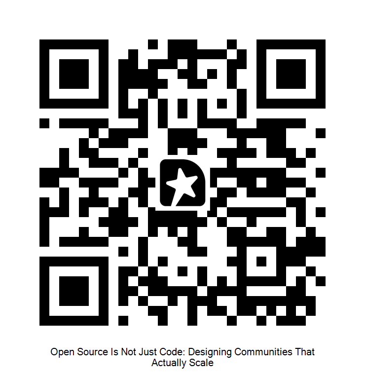

Open Source Is Not Just Code
Designing Communities That Actually Scale
Sinduri Guntupalli
Press S for speaker notes
Welcome, everyone. Today we are talking about the heart of open source: community.
We treat open source as a code problem, but some projects with genuinely good code still fail. Not because of bad engineering, but because the community was never designed to scale.
What I share today comes from my own perspective watching open source communities. It is not a rulebook. We will have plenty of time at the end, and I would love to hear your feedback.
speaker
About Me
Sinduri Guntupalli
Sr Developer Programs Engineer,
5.5 years in Drupal: developer, then Product Manager
Volunteer organizer across Drupal Austria, Drupal Switzerland, and beyond
Open Source Program Office team at Dynatrace
Building OffOn.dev , a vendor-neutral community to sustain open source contributors and grow the maintainers of tomorrow
My name is Sinduri. I started as a Drupal developer about 5.5 years ago, then worked 2.5 years as a product manager.
For anyone who does not know it, Drupal is an open source content management system.
I was fortunate to find my first job working with open source software and being mentored by passionate open source maintainers, and that is where I developed my interest in open source communities. Most of my weekends go to organizing local Drupal events with Drupal Austria, Drupal Switzerland, and others.
Since January 2026 I have been on the OSPO team at Dynatrace, building OffOn.dev, an independent open source community.
why this matters
Open Source Runs Everything
Linux
Most servers, the cloud, and every Android phone.
Git
Version control behind nearly all software.
curl
Moves data inside cars, TVs, phones, and servers.
OpenSSL
Secures a huge share of web traffic.
Python
Powers data work and most of modern AI.
Kubernetes
Runs cloud infrastructure at scale.
Most of the open source projects are maintained by small teams, often unpaid volunteers.
Before we get into problems, let's start with what is at stake. Open source is the foundation almost everything runs on.
Here are some famous examples that most of you already know of.
Linux runs most servers and the cloud, and it is inside every Android phone.
Git is how nearly all software is version controlled.
curl moves data inside cars, televisions, phones, and servers.
OpenSSL secures a huge share of the traffic on the web.
Python powers data work and most of modern AI.
Kubernetes runs cloud infrastructure at scale.
You almost certainly used several of these just to get here this morning.
Here is the uncomfortable part. A lot of open source software is maintained by very small teams, often unpaid volunteers.
That is exactly why sustaining these communities matters so much.
Part 1
1
The Burden
◆
Most projects don't fail on code. They fail under invisible weight.
Quick show of hands before we dig in. Who here contributes to or maintains an open source project?
Most projects do not fail on code. They fail under weight that nobody names until it is too late. Let me show you what that weight looks like.
context
The Comfortable Myth
The myth: success comes from code quality
Just ship better code, and the rest follows
Mostly wrong
There is a belief most of us hold quietly.
We assume a project succeeds because the code is good.
Better architecture, cleaner tests, faster releases, and everything else follows.
It is a comfortable story, because it means the thing we control, the code, is the thing that matters most.
It is also mostly wrong. The best code in the world does not save a project if nobody can contribute, or if the maintainers burn out.
reality
What Actually Kills Projects
Unclear contribution paths
Expectations never written down
A few absorb all the pressure
Fragile, then it stalls
When contribution paths are unclear, people want to help but do not know how. So they just do not.
When expectations are never written down, everyone guesses. That leads to confusion and quiet conflict.
A few people slowly absorb all the work and all the pressure.
It looks fine for a long time. Then one person steps back, and the whole thing gets fragile and stalls.
reframe
A Socio-Technical System
A socio-technical system
Code and community are one system
Community design matters as much as code
Here is the shift I want you to take from this talk.
Think of open source as a socio-technical system. The code and the community should not be two separate things you manage independently. They should work as one system, shaping each other.
When the community is healthy, the code benefits. When the community breaks down, the code suffers, no matter how good it is.
Community design should not be treated as a soft or secondary concern. It should matter as much as the technical design.
problem
The Maintainer Trap
Work piles onto a few people
The hero maintainer burns out
A single point of failure is a design flaw
A Good Model: Rust
Topic-focused teams (compiler, language, libraries, tooling, infrastructure) each own their area independently. A leadership council coordinates across teams. Ownership is spread by design, so no single person carries the whole project.
This is the most common failure, and it has a name: the maintainer trap.
The same few people end up doing everything, and the whole community depends on them.
We treat those people as heroes. But cheering for someone who is overloaded does not fix the overload.
When one person is the single point of failure, that is a design flaw in the project, not a weakness in the person.
Rust avoids this on purpose. Instead of one or two heroes, the work is split across topic teams, each owning its own area, with a council coordinating them. No single person carries the whole thing.
Part 2
2
The Fellowship
◆
The work is too much for one person. It has to be shared.
Part 2 is the response to that trap.
Nobody should carry a project alone. The real question is how you share it in practice.
framework
Six Pillars That Decide Whether a Project Lasts
Governance
Who decides, and how. Make decision-making explicit before you need it.
Contributor Experience
How easy and rewarding it is to help. Lower the cost of showing up.
Recognition
Whether people's work is seen and valued. Most community labor is invisible.
Local Community
Where belonging actually forms. Global projects still need local homes.
Communication
Whether people can explain what it solves, and why. This is how a project gets known.
Funding and Sponsorship
Whether the work is paid for. Time is never really free.
These are the six pillars I think matter most for building a healthy open source community.
Governance: who decides, and how.
Contributor experience: how easy it is to show up and help.
Recognition: whether the work is seen and valued.
Local community: where belonging actually forms.
Communication: whether anyone can explain why the project matters.
Funding: whether the work is actually paid for.
I will go through each of these in the next slides.
As I do, hold one project in your head, one you use or help maintain, and notice which of these it is missing.
pillar 1
Governance
Decide how you will decide, early
Put shared functions under a neutral body
Spread maintainer roles across people
Give conflict a clear path
Pick a model: BDFL, council, or foundation. Big projects layer several
Single-company control is the opposite: one owner, not a neutral body
The PMC elects committers on merit. Individuals represent themselves, not employers. Decisions happen in the open: if it wasn't recorded, it didn't happen.
Governance sounds heavy, but it just means deciding how you will decide, before a crisis forces you to.
Put shared things, funding, events, and infrastructure, under a neutral body instead of one person.
Spread maintainer roles across more people. Give conflict a clear route.
There is no one right shape. Some run on a benevolent dictator, some on a council, some under a foundation. What matters is that the model is explicit, not accidental.
Big projects usually mix several. Kubernetes layers all three: a foundation holds the assets, a steering committee makes the cross-cutting calls, and individual teams run the day to day.
The opposite extreme is one company controlling everything. That is common and not always bad, but the company's interests and the community's can split.
Apache is a good model that avoids exactly that. Each project is run by its own committee, the PMC, or Project Management Committee. The PMC controls the project and decides who gets added to it.
You get onto the PMC through merit. That means the actual work you do on the project, not your job title or who you work for.
And you sit on it as an individual, not on behalf of your employer. Apache is strict about this: companies do not get a seat, only people do.
That is what stops any single company from quietly taking over. Apache watches for it too. If one employer starts to dominate a project's PMC, the board steps in and pushes for more diversity.
Governance feels boring right up until the day you desperately need it.
pillar 1 · governance · code of conduct
A Code of Conduct
Explicit rules, not vague good vibes
Name what is not acceptable : harassment, discrimination, personal attacks, sustained disruption
Rules only matter if they are enforced
A widely adopted code of conduct. Clear expected behavior, clear unacceptable behavior, and a path to report and enforce.
Part of governance is a code of conduct, and it needs to be specific.
Not vague good vibes. Spell out what is not acceptable: harassment, discrimination, personal attacks, and sustained disruption.
A code of conduct only counts if it is enforced. One that nobody acts on is worse than having none, because it signals safety that does not actually exist.
The Contributor Covenant is a good model here. It is a ready-made code of conduct that spells out the behavior a project expects, the behavior it will not tolerate, and how to report and act on violations. Many projects adopt it as their starting point.
pillar 2
Contributor Experience
Lower the cost of a first contribution
Give newcomers a clear place to start
Visible path to trusted contributor
If it is confusing, they quietly leave
Published contributor ladder: from member to approver, with clear expectations at each step. Good first issues, mentoring cohorts, and a graceful way to step back.
Contributor experience is about lowering the cost of that first contribution.
Give people a clear place to start. Label good first issues. Make the onboarding path obvious.
Make the path from first patch to trusted contributor visible, so people can see a future in the project.
Kubernetes does this well. A published ladder from member to reviewer to approver, with mentoring cohorts and a graceful way to step back when life gets busy.
When the path is confusing, people do not complain. They quietly leave, and you never learn why.
pillar 2 · from experience
My First Contribution
2021, during Covid, new to the community
45 min just to open the issue, scared of being judged
Nobody judged. Community was welcoming
drupal.org/node/3227702
Let me make that personal.
My first contribution was in 2021. I started during Covid, so I had not really interacted with the Drupal community beyond the people I worked with.
Just writing the issue took me 45 minutes, not the code, just writing the issue, because I was scared of being judged.
Nobody judged me. People were kind and helpful the whole way.
That gap, between how frightening it felt and how welcoming it actually was, is exactly what good contributor experience should close.
pillar 3
Recognition
Most labor is invisible : review, triage, docs, mentoring
Invisible work gets undervalued
Record who did the work, sponsors included
A public record of who did what, across code and the invisible work. Contribution becomes visible instead of assumed.
Think about what gets recognized in most communities. Usually it is the big visible things: features, code, commits.
But most of the work is invisible. Review, triage, documentation, mentoring. It does not show up in a commit graph.
Invisible work gets undervalued. And when it is undervalued, people stop doing it.
The fix is to make it visible. Record who actually did the work, and let that credit reach the companies who fund it too.
Drupal is a good example. It runs a public contribution credit system, where every issue records who worked on it, across code and the invisible work like review and docs, and it credits the sponsoring companies too.
The work becomes visible instead of assumed, at the scale of a huge project.
pillar 3
Why Recognition Changes Behavior
Tie recognition to real work
Companies get visible standing for what they fund
It becomes routine, not a favor
When a company treats contribution as part of the actual work, with real time and budget behind it, the alignment becomes real and it lasts. Good incentive design beats good intentions every time.
Recognition is not just being nice. It quietly changes what people do.
First, individuals get credit tied to real work. The system records it, so you do not have to advocate for yourself. That makes the useful but unglamorous work worth doing.
Second, companies get visible standing for what they fund, so their business interest lines up with the health of the project.
Put those together and recognition stops being a favor you ask for. It becomes something the system produces on its own.
The pattern I keep seeing, when a company treats contribution as real work with time and budget behind it, the involvement lasts. Good incentives beat good intentions every time.
pillar 4
Local Community
why it matters
Global projects need local belonging
Pair global events with local ones
"Come for the code, stay for the community"
at a local event
Mentorship workshops for first-timers
Contribution rooms to work together
Student workshops : Drupal in a Day
A Good Model: Drupal
DrupalCon globally, local volunteer-run camps, small and accessible by design. That's where new people get pulled in and where most new organizers learn the ropes.
Even a global project needs places that feel local.
People do not form belonging at a 2,000-person conference. They form it in small rooms, over shared problems, working together. So pair the big global event with small local ones, where the barrier drops.
Drupal is what I know best. DrupalCon, run by the Drupal Association, is the global flagship, but the real engine is the local camps, run by volunteers and kept small on purpose.
That is where new people get pulled in, and where most organizers, including me, learned how any of this works.
I felt this at DrupalMountain Camp, in a workshop called Why Drupal, where we talked about why we each contribute. Different backgrounds, different journeys, but the same goal: build something meaningful and grow while doing it.
At Drupal events, there is more than talks. There are real ways for newcomers to get started.
A volunteer team runs first-time contributor workshops at almost every event, so nobody has to figure it out alone.
Contribution days give people a dedicated room to sit down together and actually contribute, at events big and small.
And a newer one, Drupal in a Day, brings students in and teaches them Drupal from scratch.
Each of these lowers a different barrier: fear, logistics, and awareness.
That is what "come for the code, stay for the community" really means.
pillar 5
Communication
Open source projects need people who can explain what problem it solves and why
Great code that nobody understands stays unused
Especially important early , to make a project known
Docs, tutorials, blogs, videos, talks, case studies
The fifth pillar is communication, and it is the one communities most often skip.
A project needs people who can explain what problem it solves and why anyone should care.
This matters most early, when nobody knows the project exists. Good communication is what turns a useful tool into a known one.
That work lives in docs, tutorials, blog posts, videos, conference talks, and case studies.
Great code that nobody understands just sits there. Explaining it should not be an afterthought.
pillar 6
Funding and Sponsorship
Time is not free. Someone pays, in money or unpaid hours
Sustainable funding keeps maintainers from burning out
Fund the boring, critical work, not just features
Not a prerequisite. It matters once others depend on you
A Good Model: Django
The Django Software Foundation pays Fellows to do the unglamorous maintenance: triage, reviews, releases, and security. Routes to fund this: Open Collective, GitHub Sponsors, Patreon, Tidelift, and the Sovereign Tech Fund.
The sixth pillar is funding, and it is the one we are shyest about.
Time is not free. Someone always pays, either in money or in unpaid evenings and weekends.
Sustainable funding is what keeps maintainers from burning out. Without it, we are asking people to quietly subsidize infrastructure that everyone depends on.
The key is to fund the boring, critical work: maintenance, security, and documentation. Not just the shiny new features.
Django is a clear example. The Django Software Foundation raises money and pays Fellows, who triage tickets, review patches, and ship releases, the work that otherwise would not get done. That is funding aimed straight at maintenance.
A project does not need funding on day one. Small projects run fine on volunteer time. But as more people start depending on you, keep sustainability in mind and put funding in place before the load gets too heavy.
Places to look: Open Collective, GitHub Sponsors, Patreon, Tidelift, and the Sovereign Tech Fund for public infrastructure funding.
how to tell
Signals of a Healthy Community
Bus factor: how many can leave before it stalls
Time to first response on issues and pull requests
Retention: do first-time contributors come back
Is the maintainer count growing, flat, or shrinking
These tell you if the pillars are working, or just look good on paper.
How do you actually tell if a community is healthy?
Four signals worth watching.
First, bus factor: how many people could walk away before the project stalls. If the answer is one, that is the maintainer trap in numbers.
Second, time to first response on issues and pull requests. Slow first responses are where newcomers quietly give up.
Third, retention. Do first-time contributors ever come back, or is it always brand new faces who never return.
Fourth, is the number of maintainers growing, holding, or shrinking. A shrinking maintainer count is an early warning, long before anything visibly breaks.
Together these tell you if the pillars are actually working, or just look good on paper.
Part 3
3
The Road Ahead
◆
What to prioritize, what AI changes, and what you can actually do.
Part 3 is the practical part.
What to focus on first, what AI changes, and what you can actually do from wherever you sit.
priorities
What to Do Now vs Later
optimize early
Clear contribution paths
Explicit, written expectations
Distributing authority early
Cheap now. Expensive to fix later.
safe to delay
Heavy formal governance
Complex tooling and automation
Over-structuring small communities
Heavy process on a tiny project can strangle it before it grows.
Not everything deserves your attention at once.
Optimize early: clear contribution paths, expectations written down, and distributing authority early, before it all lands on one person. These are cheap now and expensive to fix later.
Safe to delay: heavy formal governance, complex tooling and automation, and over-structuring a community that is still small.
Over-structuring early is a real risk. Heavy process can strangle a small project before it ever grows.
nuance
Good Advice Needs the Right Partner
"Be welcoming to everyone"
Works when paired with triage , so maintainers can keep up.
"Move fast"
Works when paired with transparency , so contributors can follow the changes and not get blindsided.
"Document everything"
Works when paired with clear ownership , so the docs stay current.
Context decides whether a practice helps. The practices aren't the problem; the pairing is.
There is plenty of good advice out there. The catch is that most of it only works when you pair it with the right thing.
Be welcoming works, but only if you keep up with the people who show up. An ignored first contribution is the fastest way to lose someone. Triage is what makes the welcome real.
Move fast works, but only if you pair it with transparency, so contributors can follow the changes and not get blindsided.
Document everything works, but only if you also have clear ownership, so the docs stay current.
The practice is not the problem. The missing partner is.
the ai question
Help and Hazard
where ai helps
Lowers the barrier to a first contribution
Speeds up docs, translation, and issue triage
Could ease the "privilege of free time" open source depends on
where ai strains
Low-effort contributions can overwhelm reviewers
The cost shifts from author to maintainer
Access is unequal. AI can become a new privilege.
AI doesn't replace community design. It raises the stakes. Share the cost and skill. Build it into contributor experience.
I cannot give this talk without talking about the elephant in the room, AI.
The upside is real. It lowers the barrier to a first contribution, speeds up docs, translation, and issue triage, and helps people who do not work in English as a first language.
AI can shorten the time it takes to understand a codebase, which could ease the reliance on spare free time that open source has always depended on.
The strain is just as real. It is cheap to generate a change, but a maintainer still has to understand it. The cost shifts from author to reviewer.
And access is unequal. The best AI tools cost money and know-how. So people at well-funded companies get faster, while volunteers and people in lower-income regions get left behind. AI risks becoming a new kind of privilege.
The point: AI does not replace community design. It raises the stakes on the same six pillars.
the ai question · in practice
When AI Becomes Slop
Low-effort AI output lands as real work for maintainers
Bogus AI security reports flood small volunteer teams
Seconds to generate, hours to debunk
The cost lands on the reviewer, not the author
Example: curl
curl was flooded with AI-generated security reports. By 2025 about 1 in 5 submissions was slop, and the genuine rate fell below 5%. The team shut down its paid bug bounty to stop the noise. The Python Software Foundation and Open Collective hit the same wall.
Let us make the AI strain concrete, because AI slop is happening right now and burdening maintainers.
Someone asks a model to find a bug, pastes the confident output into a report, marks it critical, and never checks whether it is real.
curl is the clearest case. Daniel Stenberg, who has maintained it for decades, called it a denial of service on the project. By 2025 about 1 in 5 submissions was slop, and fewer than 1 in 20 was a genuine vulnerability.
Each fake report can take an hour to debunk, and these are volunteers with a few hours a week. They eventually shut down their paid bug bounty just to stop the flood.
It is not only curl. The Python Software Foundation and Open Collective have said the same thing, and they tie it directly to maintainer burnout.
The problem is the asymmetry: seconds to generate, hours to debunk, aimed at unpaid people who keep critical software running.
To be fair, the same tools in skilled hands recently found dozens of real bugs in curl. So the tool is not the problem. Unverified slop is.
mental model
Thrive vs Decay
thriving projects
Share decisions
Make it easy to help
Recognize the work
Build local belonging
Communicate the why
Fund the work
decaying projects
Concentrate decisions
Leave contributors guessing
Let invisible work go unseen
Stay purely global
Stay hard to understand
Rely on unpaid time
The drift is slow and quiet. That's exactly why it's easy to miss.
If you remember one thing from this talk, remember this contrast.
Thriving projects share decisions, make it easy to help, recognize the work, build local belonging, communicate the why, and fund the work.
Now the mirror image. In a decaying project, decisions pile onto a few people, and newcomers are left guessing how to help. The real work stays invisible, nobody explains why the project matters, and it never feels local. And underneath it all, it runs on unpaid time until someone burns out.
The dangerous part is that the decay is slow and quiet. There is no alarm. You often notice only when it is far along.
your turn
What You Can Realistically Influence
You don't need to be a maintainer, or even a contributor. If you care about open source, any of these help.
Document one unclear process
Review a first contribution
Credit invisible work out loud
Help one local event
Fund a project you rely on
Share a project you use on social media
These are small structural acts. They compound.
You do not have to be a maintainer, or even a contributor, to help. If you care about open source, you can support it through one or more of these ways.
Document one thing that confused you when you joined.
Review someone's first contribution.
Credit invisible work out loud, where people can see it.
Help one local event happen.
Fund a project you rely on, even a little. I fund four maintainers, about 100 euros a month total. It is small, but steady support like this is what keeps people going, and it nudges others to chip in too.
Share a project you use with your team or on social media, so more people find it.
These are small structural acts, and they compound.
close
Open Source Is Not Just Code
The system around the code is what scales
Design it on purpose
reality check
No quick fix
You control your corner, not the whole
Changing defaults is slow, and that is normal
Start with one pillar
To bring it home: open source is not just code. The system around the code is what scales, or what quietly fades.
Either way, you are designing it. The only question is whether you do it on purpose.
Be honest with yourself too. There is no quick fix. You will not get it all right, and you usually control your corner, not the whole.
Changing a community default is slow, and that is normal.
Do not try to move all six pillars at once. Pick the one that hurts most right now, and start there.
community
Join OffOn.dev
A welcoming space for learners, contributors, maintainers, writers, designers, translators, and organizers
Built to sustain open source contributors and grow the maintainers of tomorrow
Play Challenges: hands-on challenges around real open source tools, in GitHub Codespaces.
Open Source Talks: for the Austrian open source community to present projects and connect with enthusiasts.
If anything from today resonated, please check out OffOn.dev.
We are building OffOn.dev on the six pillars I just walked through.
It is a vendor-neutral community with an independent board, a place to grow and find each other.
One of the core offerings is hands-on challenges built around real tools and real scenarios. Things you can fork, learn through doing, and build on.
Everything runs in GitHub Codespaces, so there is nothing to install. You can start today.
We also run Open Source Talks, where the Austrian open source community presents projects and meets other enthusiasts.
sources
Sources & Further Reading
These are the sources behind the talk if you want to go deeper.
David Hirsch's article shaped the framing.
Dries' article helped the AI section.
Chris Short's article shaped the governance section.
The examples come from the governance and contribution docs of each project.
The media is from the movie Lord of the Rings and the GIFs are sourced from GIPHY.
Thank you
Q&A

Leave Feedback
Slides & Resources
Thank you very much.
Please share your feedback using the link on the right, and you can download the slides from the link on the left.
Does anyone have any questions, or want to share your own story?
a project that closely follows all 6 pillars
Drupal Across All Six Pillars
Governance
Drupal Association and core committers, with a published code of conduct.
Contributor Experience
Mentoring, first-time workshops, and issue credit.
Recognition
Contribution credit for people and companies.
Local Community
DrupalCon, local camps, and contribution days.
Communication
Docs, conference talks, and Drupal in a Day.
Funding
Drupal Association, certified partners, and community grants.
Drupal is the one I know best, and it takes every pillar seriously. Governance through the Association and core committers, with a real code of conduct. Contributor experience through mentoring, first-time workshops, and issue credit. Recognition through the contribution credit system, for both people and companies.
Local community through DrupalCon, local camps, and contribution days. Communication through docs, talks, and Drupal in a Day. Funding through the Association, certified partners, and grants.
No project is perfect at all six, but this shows how they fit together in practice.